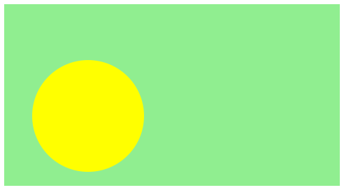

7.2
Typed Picturing Programs
1 Positions in the XY Plane
| (require typed/posn-util) | |
| package: picturing-programs-typed | |
struct
(struct posn (x y) #:extra-constructor-name make-posn) x : Real y : Real
Position in the (x,y) plane. Straight from lang/posn.
Examples:
> (define v (make-posn 5 12)) > (define w (make-posn 8 24)) > (define zero (make-posn 0 0))
Add the corresponding coordinates of two posns.
Example:
> (add-posn (make-posn 5 12) (make-posn 8 24)) - : Posn
(posn 13 36)
Subtract the corresponding coordinates of two posns.
Example:
> (sub-posn (make-posn 8 24) (make-posn 5 15)) - : Posn
(posn 3 9)
Multiply each of the coordinates of v by the real number k.
Examples:
> (scale-posn 2 (make-posn 5 12)) - : Posn
(posn 10 24)
> (scale-posn 0.125 (make-posn 8 24)) - : Posn
(posn 1.0 3.0)
Find the square of the distance between two positions. If the coordiates of each is an integer, this will result in an integer.
Examples:
> (dist-squared-posn (make-posn 0 0) (make-posn 5 12)) - : Real [more precisely: Nonnegative-Real]
169
> (dist-squared-posn (make-posn 0 0) (make-posn 8 24)) - : Real [more precisely: Nonnegative-Real]
640
Find the distance between two points (Posn).
Examples:
> (distance (make-posn 0 0) (make-posn 5 12)) - : Real [more precisely: Nonnegative-Real]
13
> (distance (make-posn 3 20) (make-posn 11 44)) - : Real [more precisely: Nonnegative-Real]
25.298221281347036
Place the img at the (x,y) coordinates of xy on the background.
Example:
> (place-image/posn (circle 40 "solid" "yellow") (make-posn 60 80) (rectangle 240 130 "solid" "lightgreen")) - : Image

True when corresponding coordinates (x’s and y’s) match exactly.
2 Image Transformation Functions
| (require typed/picturing-programs) | |
| package: picturing-programs-typed | |
Readers of the Picturing Programs book by Stephen Bloch are comfortable with the way images and check-expects work. When we start Typed Racket, they would prefer that everything except types stay familiar. This package makes all of the Picturing Programs code work in Typed Racket.
procedure
width : Nonnegative-Integer height : Nonnegative-Integer f : (Integer Integer -> Color)
Builds an image by evaluating the color function at every pixel.
Examples:
> (define (f [x : Integer] [y : Integer]) : Color (make-color (byte-clamp x) (byte-clamp (- 255 y)) (byte-clamp (* 2 (+ x y))))) > (build-image 255 200 f) - : Image